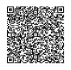
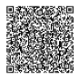

قطاع الأدب
يركز قطاع الأدب فى الهيئة على دعم صناعة المحتوى الأدبى عبر تطوير قدرات الكتاب، و رفع الوعى بالأنواع الأدبية، و تطوير مهارات القراءة لدى المتلقى ؛ و قد تتقاطع سلسلة القيمة لقطاع الأدب مع بعض من الجهات الأخرى
يركز قطاع الأدب فى الهيئة على دعم صناعة المحتوى الأدبى عبر تطوير قدرات الكتاب، و رفع الوعى بالأنواع الأدبية، و تطوير مهارات القراءة لدى المتلقى ؛ و قد تتقاطع سلسلة القيمة لقطاع الأدب مع بعض من الجهات الأخرى
تسعى مبادرة الشريك الأدبي إلى عقد شراكات أدبية مع المقاهي حــــــول الـمملكة لاحتضان فعاليــــــات أدبية مبتكرة وأقــــرب لمتناول المجتمع، مما يسهم في رفع الوعي الثقافي بشكل غيـــــر مباشر، ويقدم تجربــة مثــــرية تمكنه من التفاعل مع القطاع الثقافي.
01
إعلاء قيمة الأدب
فـي حيــــاة الفـرد.
02
دعـــــم انـتـشـــار الكتــــــاب
السعودي محلياً وعالمياً.
03
تعزيز دور مؤسسات القطاع
الخاص والثــالث فـي النــهوض بالقطاع الثقافي.
04
إلهام الأفراد للإنتاج
الأدبـــــــــي والثـقــافـــي.
بــــدأت النسخة الرابعة من مبادرة الشريك الأدبي في 1 سبتمبر من هذا العام ابحث عن شركائنا الأدبيين في مدينتك!

The Literary Partner Initiative aims to establish literary partnerships with cafés around the Kingdom to host innovative literary events that are accessible to the community. This contributes indirectly to raising cultural awareness and provides an enriching experience that allows individuals to engage with the cultural sector.
01
Fostering a greater appreciation of literature among individuals
02
Supporting the spread of Saudi books both locally and globally
03
Enhancing the role of private sector and third sector institutions in advancing the Cultural Sector
04
Inspiring individuals to produce literary and cultural work
The fourth edition of the Literary Partner Initiative began on September 1st of this year.
Find Our Literary Partners in Your City
تندرج مبادرة سحابة أدب تحت برنامج الأدب في كل مكان الساعي إلى تقريب الأدب من المجتمع. وتهدف المبادرة إلى توفير محتوى أدبي مسموع (بودكاست، وكتب صوتية) فـي الأماكن التـــي يقضي فيها الزائر ما يزيد عـــلى 15دقيــقــة، وتـضـم مـــــواد مــــن جميــــع مجـــــالات المعرفـــــة الأدبيـــــة. تتيـــح المبادرة الأعمال على منصة عصريـــة يستطيع الزوار الوصول إليها عبـــــــر واللافتـــات الموزعة في الأماكن العامة بحيث وصل عــــــدد مستمعي سحابة أدب إلى 170,000 مستمع.
The Literature Cloud initiative falls under the "Literature Everywhere" program, which aims to bring literature closer to the community. The initiative seeks to provide literary content in audio format such as (podcasts, audiobooks) placed at locations where visitors spend more than 15 minutes. It includes materials from all genres of literary knowledge. The Cloud initiative offers these literary works in a modern platform accessible to visitors through signage distributed in public spaces. The number of Literary Cloud users reached 170,000 listeners.
تقدم الهيئة عبر مبادرة ق.ق التابعة لبرنامج الأدب فـي كل مكان منصة القصة القصيــــرة إلى الجمهور العام بطريقة مبتكرة، تمنـــــح الفرصة لدور النـشر، والكُتاب المستقلين، لمشاركـــــــة نتاجهم القصصي بلغـــــات متعددة بمــــا يحقق الوصول إلى الجمهور المحلي والدولي، ويستطيع الزوار الوصول إلى المنصة الافتراضة عبر الأجهزة واللافتات الموزعة في الأماكن العامة.

As part of the Literature Everywhere program, the Commission's Sh. S initiative has introduced an innovative short story platform for the public. This program allows publishers and independent writers to share their short stories in numerous languages, reaching both local and global audiences. The virtual platform is accessible to visitors via devices and signs located throughout different public spaces.

تـقيــم هيئة الأدب والنشر والترجمة معتـــــزلات وإقامات الكتّاب محليـــاً ودوليـــــاً مستضيفـــةً مجموعة من الكتّـــــــــــاب المحليين والدولين المشتغلين بجنس أدبــــي معـيـــــــن في بيئـــــة منعزلـــــة وملهمة فــــــي مـــــــدن متعـــــــددة حــــــــــــول الـمــــملكـــــة. وتقدّم الهيئة، بمساعدة الخبراء، وصفة مثالية لتطوير أعمالهم وتبادل الخبرات والتجارب الثقافية بينهم.
01
أن يكــــــــون لك إصدار أدبي
واحــــــــــــــــد علـــــى الأقـــــــــــــــل.
02
أن يكون مجال كتابتك الأدبية
منـــــاسبــــــــاً لهــويــــــــة المعــــتــــزل.
03
أن تــــكـــــون مشتغــــــلاً بعــمل
أدبي خــــــلال وقت المشاركـــــة.
04
اجتيازك جميع متطلبات
المشــاركـــــــــة التنظيــمــيـــــة.
05
أن لا تـــــــترشــــــح لأكثــــــــر مـــــن
مـــــــــــــرة في نـــــفـــس السنــــــــــة.
امسح الباركود وسجــل
في المعـتــــزلات القادمـــــــــة

The Literature, Publishing, and Translation Commission organizes local and international writing retreats, hosting a group of local and international writers specializing in specific literary genres, being in secluded and inspiring environments across various cities in the Kingdom. The commission, with the help of specialists, provides an excellent environment for participants to improve their work while also exchanging knowledge and cultural experiences.
01
You must have at least one
published work
02
Your literary genre must
align with the retreat's focus
03
You must be actively working on a literary project during the retreat period
04
You must pass all organizational
participation requirements
05
You cannot apply for more
than one retreat per year
Scan the QR code, and sign up to
the upcoming Writing retreat
القصة القصيرة هــــــي ذاكرة المجتمع، فــــــنٌ يؤرخ ثقافتــــــــه، مـــــرآة تعكس قِـيــمه،
وأحلامـــــه،
وأساطيــــره، وثرائه الفكري والمادي.
واحتفــــاء بهذا الفـــن ومبدعيـــــه، أطلقت هيئة الأدب والنشر والترجمة سلسلة قصص من السعودية ساعية إلى
توثيق ذاكرة
المجتمع، وتأريخ ثقافته وإبراز فنه الذي سطرته الأقــلام داخل النطاق الجغرافي السعودي، ووضعِه بين يدي
القرّاء بتنوع
ثقافاتهم.
.png)
.png)
.png)
.png)

The short story is the memory of the community, an art that records its culture, a miror reflecting its values, dreams, and myths, capturing its intellectual and material legacy. In honor of this art and its creators, the Literature, Publishing, and Translation Commission has launched a series titled Stories from Saudi Arabia, with the goal of documenting the community's memory, recording its culture, and highlighting the art created by writers within the Saudi geographic scope, as well as presenting these stories to readers from various cultures
* Available at different points of sale
(we can list participating publishers responsible for these books at Riyadh book fair)
تســعى هيئــــة الأدب والنــــشر والتـــــرجمة لدعـــــم قطــــاع الفلسفة عبــــــــر تحفيـــــز الباحثيــــــن السعوديين لإنتاج دراسات فلسفية متخصصة من خلال تقديم 10 منــــح بحثية ، تشــمل الدعم العلمي والمؤسساتي لنشر الدراسات فــي مجــــــلات علمية محكمة تثري الإرشيف الأكاديمي.
01
تحـفـيــــــــــــــز الإنــــتـــــــــــــــــــــــاج
الأعــــــــمــــــــال الفلسفيـــــة.
02
إثراء محتوى المكتبات العربية
بالأبـــــــحــــــــــــــــــــاث الفلســـفـيـــــــــــة.
03
رفع جودة الأعمال الفلسفية
في المملكة العربية السعودية.
04
دعم أنشطة الفلسفة وتطوير
منظومة تنافسية مستدامة.
امسح الباركود واعرف
أكثـــــــــر عـــــــن المبــــــــــــادرة
والأبحاث المنشورة
The Literature, Publishing, and Translation Commission seeks to support the philosophy sector by encouraging Saudi researchers to produce specialized philosophical studies through the provision of 10 research grants. The grants offer academic and institutional assistance for publishing research in peer-reviewed scientific journals, which helps to expand the academic archive
01
Promoting the production
of philosophical works
02
Enriching the content of Arab
libraries with philosophical research
03
Raising the standard of
philosophical writings in the
Kingdom of Saudi Arabia
04
Supporting philosophical
activities and fostering competitive
and sustainable
environments
To learn more about the initiative and
published research, scan the QR code
تتقاطع الفنون بطرقٍ كثيرة ومختلفة، وتتـمازج وتتحد بألوان متعددة، ومن هذا التداخل الفنّي جاء مشروع كومكس الأدب السعودي. يدعم المشروع الكتّـــــاب والفنّانيــــــن، ويخلق روابطَ جديـــدةً لتكوين ذاكرة فنية وأدبيـــة سعوديــــة، تستفيد من التجــــارب القصصيــــة والروائيــة الرائدة والمبدعة. في هذا المشروع حوّلنا مجموعة من الأعمال الأدبية السعودية فـي مجال الرواية والقصة إلى فنّ الكومكس، لتلتقي الأجنـــــاس الأدبية والفنية في كتب تفيض بالكلمة المؤثّرة والرسوم المعبرة.
.png)
.png)
.png)
.png)
.png)
Arts connect in a variety of unique ways, mixing and merging with Literary a wide range of genres. From
this artistic
fusion comes the Saudi Literary Comics project
This program encourages authors and artists, and develops a Saudi artistic and literary memory, that
benefits from
pioneering and unique storytelling experiences
In this project, we transformed a collection of Saudi literary works, including novels and short
stories, into comic
art, blending literary and artistic genres in pages overflowing with striking language and expressive
images.
وفّـــــرت هيئة الأدب والنشر والترجمة عشر منــــــح بحثيــــة محكّمــــة تختص بأدب الأطفال واليـــافعين غايتها إتاحة فرصة التفرغ العلمي للباحث السعودي للخوض فــي الدراسات المتخصصة لتجويد وتحفيز صنَاعة الأعمال فـــي المجال باعتبـــاره من الأجناس الأدبية غيـــــر الشائعة. إضافة إلى دعم إثراء الأرشيف الأكاديمي محليا ودوليا، مستجيبة بذلك لأهداف الهيئـــــة التـــــي تهتـــم بتطويـــــــر أدب الأطفال واليافعين، وتحسين جــــــــودة المحتــــوى المقــــدم للأجيــــــــال الصاعدة، وتعزز من تأثيـــــــر الأدب على تكويـــــــن شخصيتهم وتطويـــر مهاراتهم، وبالمستقبــــل الذي سيصنعه قارئ اليوم من أطفال الوطن، وبالمكتبة العربية التي تعكس ثقافة وحضارة متحدثيها.
د. العنود محمد المطيري سيميائية الخيال العلمي عند فهد الحارثي - مسرح الطفل - انموذجاً
نوف عبدالعزيز السديري تجليات رواية اليافعين في المملكة العربية السعودية – الرؤية والتشكيل
د. فواز صالح السلمي
توظيف الموروث الشعبي في الأدب الموجه للأطفال لبناء الشخصية الثقافية
للطفـــل السعودي
وزيـــــــادة وعيــــــه بمدلولات
الألفــــــاظ والتراكيــب اللغوية
أحمد يحيى قيسي أساليب القص في حكايات الأطفال العالمية
د. خليف غالب الشمري أدب اليافعين في السعودية , بين الرؤية والفن - أروى خميس أنموذجاً
د. محمد سعيد الراشدي التلقي النقدي لقصص الأطفال في المملكة - دراسة في نماذج مختارة
أمل راكان الخالدي The position and status of translated Manga in Saudi Arabia

امسح الباركود وأعرف
أكثـــــــــر عـــــــن المبــــــــــــادرة
In addition, this initiative enriches the academic archive locally and globally, which aligns with the Commission’s goals of developing children's and young adults' literature, enhancing the quality of content presented to younger generations, and amplifying the impact that literature has on their personalities and developing their skills. With a deep understanding of how the literature read by today's children shapes their future, and how literature reflects the Arabic library and represents the culture and heritage of the community
Dr. Alanood Mohammed Almutairi
Science Fiction Semiotics in Fahd Radha Al-Harithi's Work:
The Child Theater as a Model
Noof Abdullaziz Alsudairi
Manifestation of young adult novel in kingdom
of Saudi Arabia-vision and situation
Dr. Fawaz Saleh Alsulami Employing Saudi Folklore in Children's Literature
Ahmed Yahya Qaissy Narration Methods in International children's tales
Dr. Khalifa Ghalib Alshammari Young people's literature in Saudi Arabia between vision and art Arwa Khamis as a research model
Dr. Mohammed Saeed Alrashdi Critical Reception of Children’s Stories in the Kingdom of Saudi Arabia
Amal Rakan Alkhaldi The position and status of translated Manga in Saudi Arabia
Scan the QR code for more
information on the initiative
ضــمــن جهود هيئة الأدب والنشر والترجمة فـي تنمية الحراك الأدبـــــي السعودي وإثرائه بالفعاليـــــات والأنشطـــــة التـــي تستهدف مختلف شرائـــــح المجتمع، يأتـــــي "أسبـــــــوع الطفل الأدبي" مركزاً الضوء علـى علاقــــــة الطفل بعوالم الأدب وكيفيـــــة تعاملـــه معها، من خــــــــلال ورش عمل وفعاليـــــــات وأنشطــــة، منها مــــــا يتصــل بالأسرة بطريقة تساعد على تنمية شغف الإبداع بالقراءة والكتابة والرواية في نفوس الأطفال وكذلك تنمية الشغف الأدبي لدى أولياء الأمور.
تنـمية شغف الإبــــــــــــــــــــــــــداع
تعزيــــز حب القراءة والرواية والكتابة لدى الأطفال وأولياء الأمور.
تطوير المهارات الـــقـــرائـيـــــــــــــــــــة
تحسين القدرات القرائية والمهارات العقلية للطفل.
تنمية العادات الأدبـــــــيــــــــــــــــــــة
تشجـــيــــع العــــــادات الأدبيـــــة لـــــــدى الأطفـــــــال.
رفــع الوعــــــــي الثــــقــافـــــــــــــــي
زيـــــــــــــــادة الوعـــــــــــــي بالثــــقـــافــــــــــة والأدب.
تحفيز التفاعل
تشجيـــــــع التفاعل مـــــــع الأنشطةـــ الثقافية والأدبية وتعزيز القدرات الإبداعية لدى الطفل.
امسح الباركود
للتسجيــــــــــــــــــــــل

Within the Literature, Publishing, and Translation Commission to foster the Saudi literary movement and enrich it with events and activities targeting various segments of society, "Children's Literary Week" sheds the light on the relationship between children and the world of literature and how they interact with it, through workshops, events, and activities, some of which interact with families in ways that ignites children's passions for reading, writing, and storytelling while also cultivating literary excitement among their parents
Igniting the passion of creativity
Instilling the love of reading, writing, stories, and novels in both Children and Parents.
Improving reading skills
Improving children’s reading and intellectual skills.
Nurturing literary Habits
Encouraging Children to Adopt Literary Habits.
Raising Cultural Awareness
Raising awareness of culture and literature.
Encouraging Participation
Encouraging children’s active participation in cultural and literary activities, and a promoting improvement in their creative skills
Scan the QR code
to register
إيمانـــــــاً من الهيئـــــة بأهميـــة صقل المواهب وتعزيز الإبـــداع الأدبي، قامت بتنظيم مسابقة بابا طاهر لتحفيز المهتمين من الفئة العمرية الأكبر من 18 سنة للكتابة في أدب الأطفال واليافعين، حيث تسعى المسابقة إلـى تسليــــــط الضوء على هذا الجنس الأدبــــي ، وعلى اسم رائد المجــــــال الأستاذ الراحل طاهر زمخشري تقديرًا لجهوده في المجــــال ومساهمته في الحركة الإعلامية والإبداعية فـي المملكة، وسخّر مهاراته في كتابة الأطفال حتى لقّب بـ «بابا طاهر».
01
دعــــــم إنتاج المحتوى المحلي
الخاص للأطفال واليافعين.
02
إبراز القيمة الأدبية والوطنية
للأديـــــــب طــــاهر زمخشـري.
03
تعزيـــــــز العـلاقة بيـن
الطــفــــل والــــكــتـــــــاب.
04
إثـــــــــراء مكتبــــــــة الطفــل
بقصص محليـة مميزة.

The Commission, believing in the necessity of sharpening talents and boosting literary originality, established the Baba Taher Competition to encourage interested individuals above the age of 18 to write in the field of children's and youth literature. The competition aims to raise awareness of this literary genre while also honoring the late Professor Taher Zamakhshari's name as an acknowledgment of his efforts and achievements in the Kingdom's media and creative movements. His ability to write for children earned him the nickname of Baba Taher.
01
Supporting local production of
children and youth literature
02
Highlighting the literary and national
value of the Writer Taher Zamakhshari
03
Improving the connection
Between children and Books
04
Enriching children's libraries
with unique local stories
An annual grand conference that hosts specialists in philosophy and its theories, as well as those interested in its modern applications from all over the world. It targets a diverse audience in terms of interests, expertise, and academic backgrounds. Alongside the conference, a variety of activities are held to enrich philosophical thought, including lectures, panel discussions, intellectual dialogues, and comprehensive workshops that delve into the conference's themes. Additionally, the conference offers a space for interactive experiences in the field of philosophy to raise public awareness on the importance of philosophy and its various practices in our daily lives
01
Creating space, a space for conversation and discussions in regards to the most recent philosophical breakthroughs and contemporary applications.
02
Supporting the availability of multifaceted philosophical material appropriate for all parts of society
03
Building bridges of collaboration across all philosophical institutes from different countries around the world.
04
Advancing scientific and academic research in the field of philosophy
مؤتمر سنـــــوي ضخم يستضيف المختصين فــــي الفلسفة ونظرياتـها والمهتــمين بتطبيقاتها الحديثة من جميع أنحاء العالم، مستهدفاً حضوراً متنوع الاهتمامات، والخبرات، والخلفيات الأكاديمية. تقـــام على هامش المؤتمر محاضرات وحلقات نقاشية وحوارات فكريــــــة تـــثـــري الفكـــــــــــر الفلسفي، وورش شامــلـــــــة تتنــــــاول مـــوضـــوعـــــات المؤتمـــر. بالإضـــافـــــــة إلـــــى ذلــــك، فـــــــإن المؤتمر يــــقــــــدم مساحــــــــة للتجارب التفاعلية فـي مجال الفلسفة لرفع الوعي العام بأهمية الفلسفة وأشكال ممارساتها في حياتنا اليومية.
01
إيـــجــاد مساحة حوار لمناقشة مستجدات
علـــم الفلسفـــة وتطبيقـــاتــــــه
الــــحديثـــــــــة.
02
دعم إتاحة محتوى فلسفي متعدد الأبعاد
ومـوجـــــــه لجميـــــع الفئــــــــــــــات
المجتــمـعـيـــــة.
03
بناء جسور التعاون بين جميع المؤسسات
الناشطة فـي مجال الفلسفة من مختلف دول العالم.
04
دفــــــع عجـــلــة البـــحث العلمي والأكاديمي
فــي مجـــــــــــال الفلـــسفـــــــــة.
يستهــــدف برنــــــامج التدريب الفلسفي المكـــثــــــــــــــــف فـــي الفلسفـــــــــــة تطويـــــــــــــــــــر القطــــــــــــــــــــــــاع الفلسفي فـــــي المملكة العربية السعوديـــــــة من خــــــلال تحسيـــــــــــــــــــــــــــن جـــــــودة المحتـــــــــــــــــــــوى الفلسفي، وتطويــــــر إمكانيات الممارسين في المجال لتحقيق مخرجــــــــات فلسفية متـــميزة.
01
شهادات حضــــــــــور البرنامج التدريبي.
02
تبادل الخبرات المحلية والإقليمية فـي مجالات التدريب الفلسفي.
03
تدريب مكثف عن أفضل الممارسات فـــــــي كتـــــابـــــــة المحتــــــوى الفلســــــــفي.
04
شبكـــــــــــــة من الخبـــراء فـي مجــــــــال الفلسفة.
05
جلسات استشارية مع خبراء ومتخصصين فــــــي الفلســفــــة.
06
لا يتطلب رسوم للتـــــسجـــــيــــــــــــــل.
امسح الباركود
للتسجيــــــــــــــــــــــل

The Extensive Philosophy Training Program intends to grow the philosophical sector in Saudi Arabia by raising the quality of philosophical content and developing practitioners' capacities to generate remarkable philosophical outcomes.
01
Certificates for attending the program.
02
Exchange of local and regional expertise in the fields of philosophical training.
03
Extensive training on the best practices in philosophical writing.
04
Access to a network of philosophy experts.
05
Advisory sessions with philosophy experts and specialists.
06
No registration fees required.
To know more about the
initiative, scan the QR code
تسعى حاضنة الكتّـــاب إلى دعم الأدباء الجدد وتقديم تجربة تدريبية متكاملة من خلال برنامج مدته 6 أشهر ينتهي بطباعة ونشر وترويج أعمالهم محلياً وإقليمياً.
01
تعزيز الهوية السعودية
فـــــي القطــاعــات الأدبيــــة.
02
إثــــــراء المحــتـــــوى الأدبـــــي
مــــن
خــــــلال كتـب
ومؤلفات جديدة.
03
التعريف بأجنــــــاس أدبـــــيــــــــة
جديدة وتشجيع النشر فيها.
04
رعـــايــــــة واحتـــــضـان
الإبـــــداع والموهوبين.
01
الخيال العلمي
02
أدب الغموض والجريمة
03
أدب الرحلات
04
الـــمانـــجـــــــا
05
الـــــــروايـــــــــــــــــات المصورة للكبار
06
المذكـــــــــرات

The Authors' Incubator strives to support new literary talents by providing a six-month training program that ends with printing, publishing, and marketing their works locally and regionally.
01
Boosting the presence of Saudi identity in literary domains.
02
Expanding the literary content by incorporating new books and publications
03
Introducing and promoting the publication of new literary forms.
04
Fostering and supporting creativity and talented writers.
01
Science Fiction
02
Mystery and Crime Fiction
03
Travel Literature
04
Manga
05
Graphic Novels for Adults
06
Memoirs
تسعى هيئــــة الأدب والنشر والترجمة إلى تعزيز نمو القطاعات الثلاث عبر دعم الممارسين فيها وتسويــــــق إنجازاتهم في إثراء المحتوى المحلي، لإبــــــراز إرث المملكة الثقـافـي على الصعيدين المحلــــي والدولــي. وعلى إثر ذلك، تطلق الهيئة مبــــــادرة "دعم صنّــــــــاع المحتوى" لتقديم الدعم الاستشاري والترويجي لإنتـــــاج المحتــــــــوى الأدبي النوعي والعصري عبر مختلف منصات الإعلام، في خطوة طموحة لتجويد الإمكانيــــــات وتعظيــم الفرص لتحقيق التنمية الثقافية المستدامة. وهــذا الهدف يتماشى بدقة مـــع المحاور الاستراتيجية لرؤية المملكة 2030، المتمثلة فــــي بنــــــــــــاء مجتمع حيوي، واقتصاد مزدهر، ووطن طموح.
01
جعل الثقافة
أسلوب حياة.
02
تعزيز قيمة الأدب
فــي حيــــــــاة الفرد.
03
دعــــــم انتـــــشــار الكتـــــــاب
السعودي محلياً وعالمياً.
04
تعزيز دور مؤسسات القطاع الخاص
والثــــالث في النهوض بالقطاع الثقافي.
05
إلهام الأفراد للإنتاج
الأدبــــــــــي والثقافـــــي .
The Literature, Publishing, and Translation Commission seeks to enhance the growth of the three sectors by supporting practitioners and promoting their achievements in enriching local content, to showcase the Kingdom’s cultural heritage locally and internationally. To achieve such a goal, the Commission is launching the Content Creators Support initiative to provide advisory and promotional support for producing high-quality and contemporary literary content across various media platforms. This ambitious move seeks to improve local competencies and optimize opportunities for long-term cultural growth. This move, aligns seamlessly with the main strategic goals of the kingdom's 2030 vision, dedicated to nurturing a lively society, a successful economy, and an ambitious nation
01
Making culture
a lifestyle
02
Fostering a greater appreciation
of literature among individuals
03
Supporting the spread of Saudi
books both locally and globally
04
Enhancing the role of private sector and
third sector institutions in advancing
the Cultural Sector
05
Inspiring individuals to produce
literary and cultural work